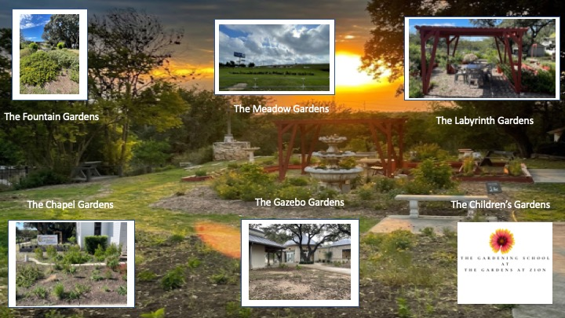

Interactive Garden Directory
Explore the distinct garden zones across our site. Click any framed photo on the map or a card below to view planting palettes, design philosophy, and care protocols.
Master Site Layout

Master map image loading. Check folder path.Click any photo frame on the map above to jump straight to its essay and layout.
The Fountain Gardens
Tiered central water fountain framed by sweeping fields of primary color inspired by Giverny.
Suzie's Garden (The Gazebo)
Precision shade bed featuring Ajuga, Foxtail Ferns, and structured organic soil building.
The Meadow Gardens
Full sun native prairie zone with drought-tolerant flora and pollinator hubs.
The Labyrinth Gardens
Geometric walking path surrounded by fragrant herbs and meditative plantings.
The Chapel Gardens
Serene reflection bed with white floral displays and acid-loving specimens.
The Gardening School
Educational raised beds, curriculum programs, and soil research plots for practical learning.